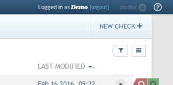
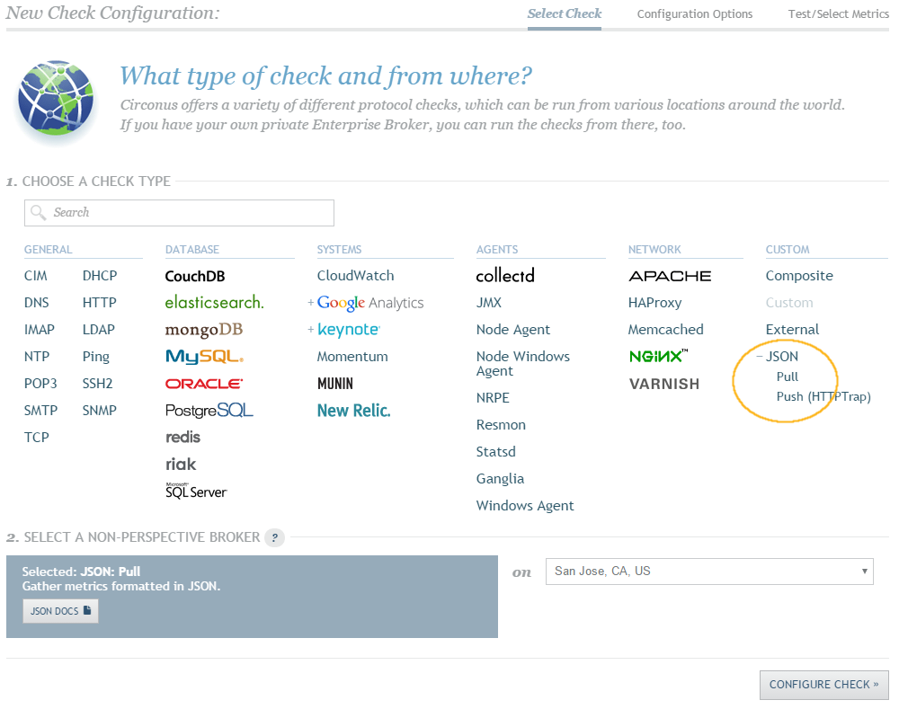
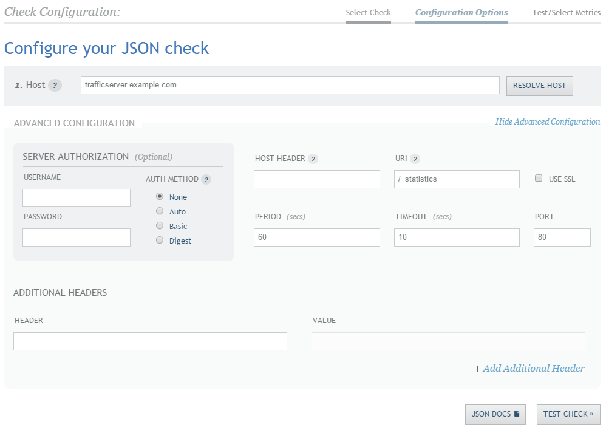
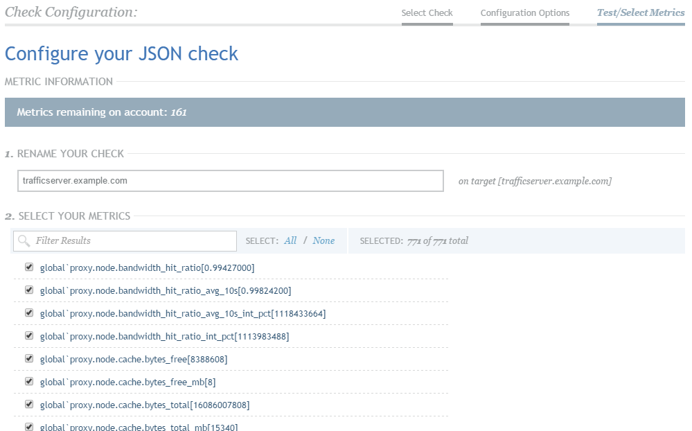
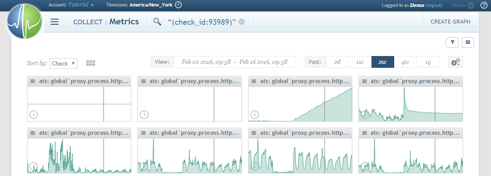

Circonus¶
Circonus is a commercial systems monitoring and analytics product, available in hosted (SaaS) and on-site configurations.
While it does not currently offer a module specific to Apache Traffic Server™ statistics, it is very easy to add monitoring by combining the Traffic Server plugin Stats Over HTTP with Circonus’s JSON metrics collector.
Setup¶
The following steps assume that you already have an active Circonus account on their hosted service, or that you already have an on-site installation. If you do not, that must be set up first. Trial accounts are available and will suffice for this guide.
Enable Stats Over HTTP¶
Follow the directions in the Stats Over HTTP Plugin chapter to
configure the plugin. At a bare minimum, you will need to add the plugin to
plugin.config. For this guide, we will assume the following entry:
stats_over_http.so _statistics
This enables the plugin and makes Traffic Server statistics available at the path
/_statistics. For production environments, you are strongly encouraged to
use a different (and obfuscated) path for your statistics since they reveal
many internal details of your caching proxy. The plugin documentation provides
more details.
Create Circonus Check¶
For these steps, we will assume that Traffic Server is listening on port 80 at the
domain trafficserver.example.com. You should adjust these to match your
environment.
Begin the new check creation process from within your Circonus account by clicking the New Check button near the top-right of the checks screen.
For the check type, you should select JSON under the Custom list, and then choose the Pull type. The broker you choose to use is entirely up to you and will depend largely on whether you are using on-site Circonus or the hosted service, as well as the geographic location of your Traffic Server instance(s).
Click on Configure Check to proceed.
Click on the Show Advanced Configuration link to expand the check options. Enter your Traffic Server instance’s externally-accessible domain for Host and make sure to set URI to the path at which the statistics are available. Adjust any of the other options to match your environment if necessary (for this guide, only Host and URI will need to be entered).
Click on Test Check to proceed.
If all is well, you should see a long list (several hundred entries) of Traffic Server statistics, with their associated values. If you do not, verify that Traffic Server is running and use
curlto manually fetch the statistics data from your server.You may want to limit the metrics you actually track from Traffic Server, since so many are made available. If so, simply uncheck those you aren’t interested in from the list. If you only want to track a few metrics, click Select None and then check the ones you want. You can filter the results to easily find metrics in the list.
Save your new check.
Verify the collected metrics in Circonus by opening your new check and clicking on Metrics Grid for an overview visualization of all the data being collected.

Congratulations! You’re now ready to begin setting up alerts, visualizations, and dashboards for your Traffic Server statistics. You can repeat the above steps for any additional Traffic Server instances you have running.